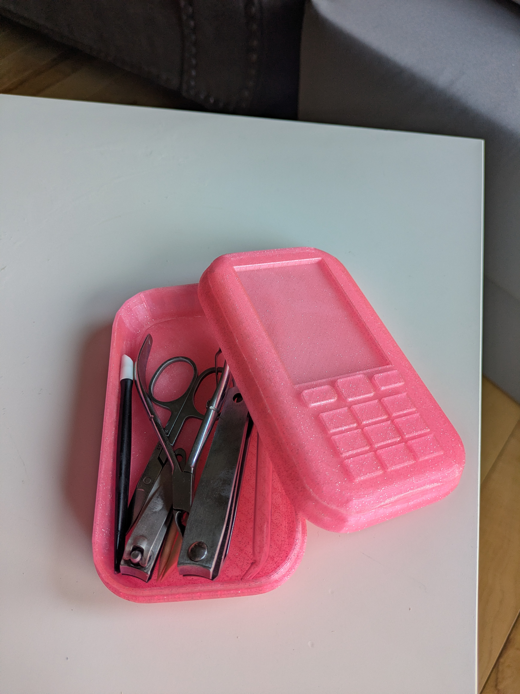
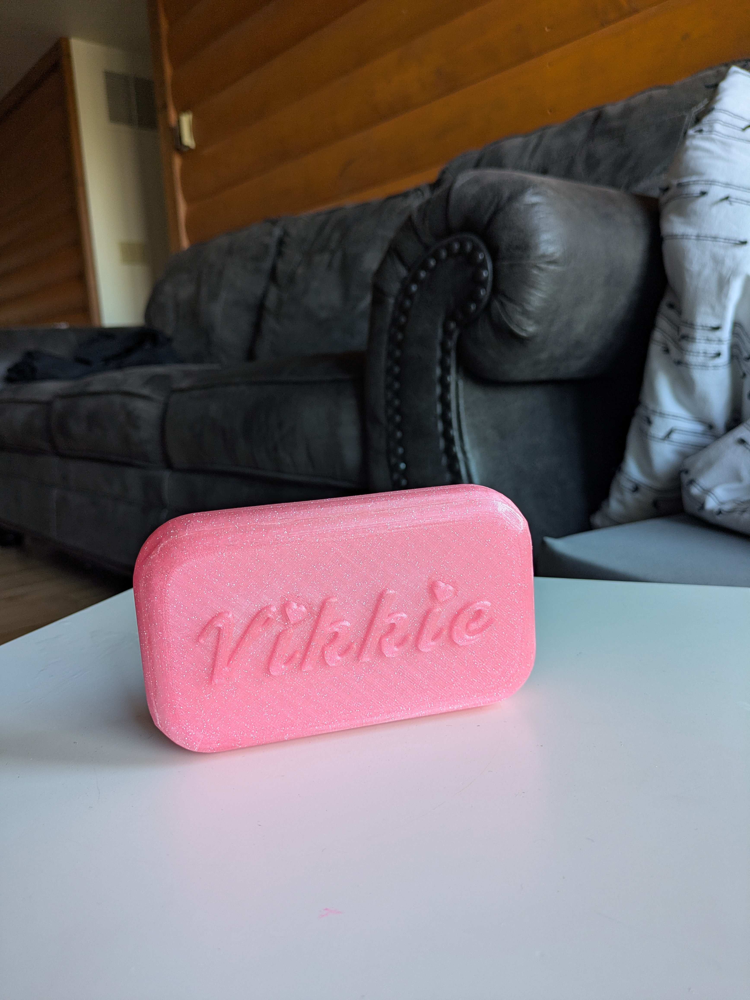
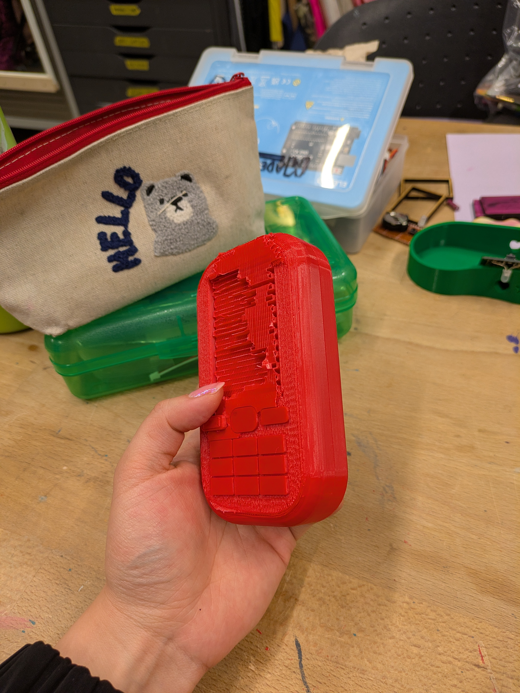
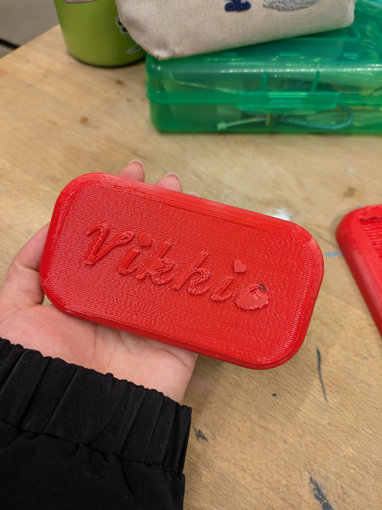
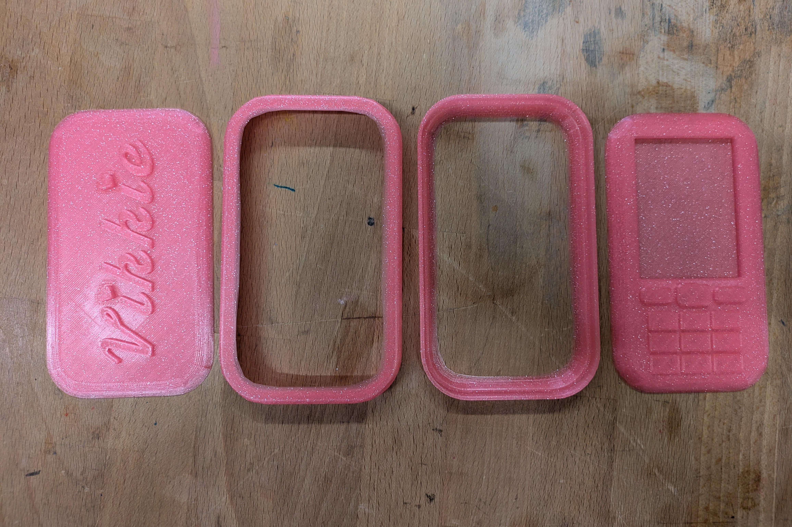

<> Y2K Phone Trinket Box </>


For this project, I was inspired by Y2K style toy cell phones, specifically the ones that have lipgloss or eyeshadow in them. I wanted to make something pink and girly that I could store something in.
The challenge with this project was designing something that would look reasonably clean as a 3D print, which I discovered has a lot of limitations. It took multiple attempts and some pretty ugly prototypes before I arrived at the final build.


I ultimately figured out that I should print it out in four separate pieces that I could then superglue together.
It’s been a great home for my nail tools so far!
